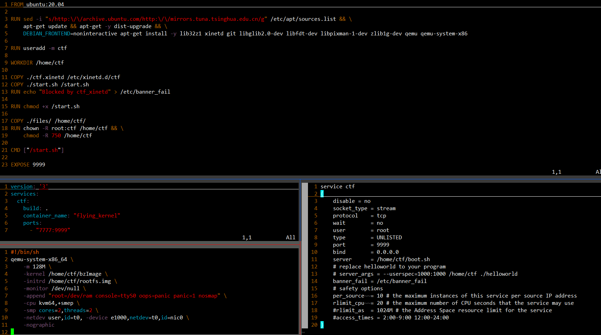
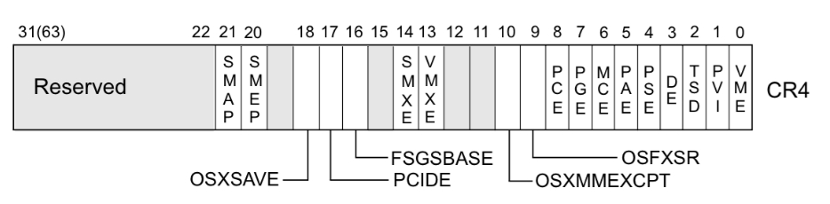

CTF再开始
不可视境界线最后变动于：2022年8月3日 下午
- CTF types : Jeopardy, Attack-Defence and mixed.
- eehhhhhh, 完全不知道CTFtimes怎么用…
a new start from SCTF-flying_kernel
the following is a few concepts.

What is the
-initrdin qemu command line used for?It is used to init RAM disk, which utilize RAM with a drive to act like an SSD disk.
And look this answer
docker
review the concepts of docker.

Docker Desktop needs Ubuntu 22.04…. a new VM. Okay, left the Docker Destkop away.
details are written in linux relative hints
KVM
run kvm-ok in kali shows NOT SUPPORT at first, then i try to update the VM hardware compatibility in vmware, now it works.
the flying-kernel is using qemu in the container, but i find that there is a -cpu kvm64, +semp argument. It means a processor with kvm enabled. and when i search on google it says qemu may utilize the kvm to accelerate itself.
VMWare
it relies on software to simulate hardware functionality and create a virtual compoter system.
SMP
from wikipedia.
Symmetric multiprocessing or shared-memory multiprocessing (SMP) involves a multiprocessor computer hardware and software architecture where two or more identical processors are connected to a single, shared main memory, have full access to all input and output devices, and are controlled by a single operating system instance that treats all processors equally, reserving none for special purposes.
CPUID
SMEP and SMAP.
https://wiki.osdev.org/Supervisor_Memory_Protection
xinetd
Kernel Module
modinfomodprobe(intelligently add or remove modules)mknod- modules are object files whose symbols get resolved upon running insmod or modprobe.
- device driver:
ll /dev=>crw-rw---- 1 root dial 4, 67 Jul 5 2000 /dev/ttyS3
c -> character device, 4 -> major number, 67 -> minor number. Major number assigned list
/proc file system: Originally designed to allow easy access to information about processes (hence the name), it is now used by every bit of the kernel which has something interesting to report- use
/proc file systemto get module info in user-land program. such asproc_create()proc_remove()functions.
- use
class_create()A class is a higher-level view of a device that abstracts out low-level implementation details.
header file- to be continued…
Others
sudoers— default sudo security policy plugin
flying-kernel
很好, 又发现他用的是字符设备的kernel module, 继续看kernel module文档(在上面).
现在又发现CTF-wiki上有内核的知识, 一大堆东西接着pwn.college后面, 所以还得先学掉那些东西…. 不然什么smap smep保护都不知道怎么用. (还有我怎么看到UAF一点都不敏感.)
smap明明在pwn.college上见到过了, 看来过一遍概念还是没法留下深刻的印象, 之前的再复习复习.
Kernel Mode
- Read-copy-update : RCU
- in kernel code may use
__rcubefore variable to indicate the use of RCU.
- in kernel code may use
- kallsym file info type: link
Privilege escalation
change self: 改变自身权限.
- task_struct and cred and other pointers utilization.
change others: 改变高权限进程的控制流.
CHANGE DATA :
call_usermodehelper只能说是告诉了我有这么一种方式, 但是更具体的细节还得搜其他的东西.
post | another post with several exp.poweroff_cmdwhen execinitorpoweroffcommand in shell.
CHANGE CODE :
- revise code in vDSO(virtual dynamic shared object).
in Linux man page:
The “vDSO” (virtual dynamic shared object) is a small shared library that the kernel automatically maps into the address space of all user-space applications.
locate vDSO:
- in IDA: first find
init_vdso(), then clickvsdo_image_64variable, and then we can find the address of raw_data, which can be used to address the true vDSO. - in Memory:
- directly: vDSO is in fact a ELF file. we can locate the function name string in memory to figure out the address of vDSO.
- indrectly: the vDSO is at a constant offset from kernel base.
Information disclosure & DoS
Defence
SMEP & SMAP
开启
默认情况下，SMEP 保护是开启的。
如果是使用 qemu 启动的内核，我们可以在 -append 选项中添加 +smep 来开启 SMEP。
关闭
在 /etc/default/grub 的如下两行中添加 nosmep
1 | |
然后运行 update-grub 并且重启系统就可以关闭 smep。
What is GRUB(Grand Unified Bootloader)?
GRUB is the default bootloader for many of the Linux distributions.
-> more details <-
如果是使用 qemu 启动的内核，我们可以在 -append 选项中添加 nosmep 来关闭 SMEP。
查看
1 | |
Attack SMEP
把 CR4 寄存器中的第 20 位置为 0 后，我们就可以执行用户态的代码。一般而言，我们会使用 0x6f0 来设置 CR4，这样 SMAP 和 SMEP 都会被关闭。
内核中修改 cr4 的代码最终会调用到 native_write_cr4，当我们能够劫持控制流后，我们可以执行内核中的 gadget 来修改 CR4。从另外一个维度来看，内核中存在固定的修改 cr4 的代码，比如在 refresh_pce 函数、set_tsc_mode 等函数里都有。
copy_from/to_user : 在劫持控制流后，攻击者可以调用 copy_from_user 和 copy_to_user 来访问用户态的内存。这两个函数会临时清空禁止访问用户态内存的标志。
KPTI - Kernel Page Table Isolation ¶
utilization method
Internal Isolation WiKi
- Key: a cache with SLAB_ACCOUNT cannot be merged with a cache w/o SLAB_ACCOUNT, that is, used for dedicated purpose.
__GFP_ACCOUNT: Kernel doc (GFP -> Get Free Pages)
- Untrusted allocations triggered from userspace should be a subject of kmem accounting and must have
__GFP_ACCOUNTbit set. There is the handyGFP_KERNEL_ACCOUNTshortcut forGFP_KERNELallocations that should be accounted.
memcg(memory cgroup) & cgroups: IBM doc
The memory subsystem of the cgroups feature isolates the memory behavior of a group of processes (tasks) from the rest of the system. It reports on memory resources used by the processes in a cgroup, and sets limits on memory used by those processes.
kmem-cache-create(): linkWhat is cache in Linux?
… not clear, only know that it is used by
kmem_cache_create.What functions use this feature?
kmem_cache_create()kmem_cache_alloc()It will allocate objects from a dedicated slab cache created by
kmem_cache_create. If you specifically want a better slab cache management dedicated to your module only, usekmem_cache_createfollowed bykmem_cache_alloc. USB/SCSI drivers use this.kmem_cache_createtakes sizeof your object you want to create slab of, a name which appears in /proc/slabinfo and flags to govern behavior of your slab cache.
kmalloc()malloc an aligned space, start from 32 bytes. -> src is here <- | -> doc is here <-
Info Disclosure WiKi
dmesg_restrict | kptr_restrict
Randomization
KASLR
FG-KASLR : 主要是在FG-KASLR的环境下还有哪些可利用的地方.
kernel UAF¶
主要是内核中内存分配管理的利用, 即普通堆块释放后被cred结构体的malloc分配(因为大小一致), 然后使用另一程序对原指针的操作修改cred为root权限. 这个内存管理特性和上面的linux cache有关系.
Kernel ROP
强网杯2018-pwn-kernel-core
看到skr师傅早在18年的wp, 一步一步来很详细, 参考见->这里, WiKi上也有相应内容. 我自己试一试.
首先下载.tar文件, 然后解压:
1 | |
core是使用cpio -idm < core.cpio命令extract之后的文件夹, 并没有重命名之后再使用gunzip, 嗯, 我也不知道为什么, 反而用那种方法gunzip会告诉我无法识别文件格式.
start.sh:
1 | |
.cpio中包含以下文件:
1 | |
core.ko is kernel module, gen_cpio.sh can be used to regenerate the archive after revision. vmlinux is the kernel image. init is (????) init file. but i dont know when it will be executed.
init file:
1 | |
居然手贱在主机里执行了init, 给我执行了一堆奇怪命令….我还没弄快照…..还好没啥事.
现在修改init文件, 重新打包后运行系统直接init执行错误. 真是神奇啊.
总不能是权限问题吧…. 从各种意义上来说, 这很离谱.
突然又成功了, 玄学的环境.. 哦我知道为什么了:
在共享文件夹下无法创建符号链接, 所以重新打包之前/bin下面没有busybox的配置. 直接移至/root下.
然后是core.ko.
init_module:
1 | |
read:
1 | |
write:
1 | |
ioctl:
1 | |
copy_func:
1 | |
要注意的一点是xref的使用, 我看到的都是引用而不是写入就以为没有相关代码, 实际上有一处引用是用作函数
copy_from_user()的参数, 所以是有写入的操作的.IDA相应reference type:
2
3
4r Read
w Write
rw Read/Write
o Reference有时间就看下IDA的文档, 说不定有新东西.
总结:
read函数把栈上内容加off后copy_to_user 64字节, 但是在此之前已经清空过数组全部的64字节.
ioctl有三个选项, read, 修改off(无限制), 把bss段的name变量复制a3字节到栈顶上(小于数组的64字节, 但是是无符号数).
write函数copy_from_user到name变量里(小于2048字节).
文件有canary+NX, 没有RELRO+PIE.
调试:
gdb中用target remote :1234加上add-symbol-file vmlinux即可.
通过查看/sys/module/sections/.text找到该module的base address, 为0xffffffffc0000000. 当然, 这是为了调试, 否则kaslr是默认开启的, 而且只能被root用户读取.
过程:
之前在pwncollege的shellcode是单独一块区域, 这个题目是在栈上, 如果使用了上一个函数的栈空间可能就会出问题了, 这次内核可能就真的崩了. 还是学着他那样做吧, 使用iret, 用c的内联汇编保存一点东西.
- 利用
ioctl()中off指定的leak, 得到canary和core_ioctl()的返回地址. write()中无符号溢出覆盖, 可写入任意长度. 此时构建ROP chain.- ROP chain包括:
- 执行
commit_creds(prepare_kernel_cred(0)), 其中两个内核函数的地址要通过/tmp/kallsyms,
要在c里遍历文件找到地址. - 要注意的是实际环境中kaslr是开启的, 这里有几个数值需要提前计算:
vmlinux未开aslr的基址:0xffffffff81000000
运行中在kallsyms里找到的函数地址: 可用来计算运行时内核基址. - vmlinux中gadget的地址和实际运行时的有偏差, 由上面两个数值计算得出后可以消除.
所以gadget的地址可以先行写出. - ROP chain的结尾通过iret返回, 这一条指令会额外pop出cs, EFLAGS,
- the processor pops the return instruction pointer, return code segment selector, and EFLAGS image from the stack to the EIP, CS, and EFLAGS registers
- 执行
- 写入canary+修改返回地址到ROP chain.
- 然后要返回用户态. WiKi里用了iret, 所以要保存一点其他东西.
exp: (perfect exploitation)
1 | |
2
3
4
5
6
7
8/* below here defined by x86-64 hardware */
size_t rip;
uint32_t cs;
uint32_t padding4;
size_t eflags;
/* below here only when crossing rings, such as from user to kernel */
size_t rsp;
uint16_t ss; //higher 48 bits are discarded
Ret2user
题目还是和上一题一样. 换一种方法.
ret2usr 攻击利用了 用户空间的进程不能访问内核空间，但内核空间能访问用户空间 这个特性来定向内核代码或数据流指向用户控件，以 ring 0 特权执行用户空间代码完成提权等操作.
只能在linux虚拟机里面做了, windows下用共享文件夹加上ssh不好整, 再整理一下HOME文件夹.
压缩包解压出来的vmlinux和cpio解压的不一样……. 完全搞不懂为什么. 暂且换掉.
commit_creds(prepare_kernel_cred(0))
struct cred *prepare_kernel_cred(struct task_struct *daemon)int commit_creds(struct cred *new)
- 最后的rop_chain写入是通过ioctl, 数值从
int64_t被截断为int16_t, 所以最后两字节填上一个合适的数字即可. - 一开始写的时候直接往core使用read, 但是在IDA里面在
Exports窗口里查看core_fops结构体里面没有core_read的指针, 只能在ioctl里面调用read. - 由于kallsyms文件是在insmod之前复制到tmp文件夹下的, 所以其中没有core的各个函数地址.
- parse_kallsyms里用文件读取又栽了.
- 没有料到一行会有四个字符串, 最后一个
[core]用来指示模块名称, 导致fscanf输入错误. - 还是换成了
fgets()先输入一行, 再对这一行进行sscanf scanf和printf要注意格式参数,scanf可以使用%Lx | %llx,printf可以使用%p | %llx来输出8字节指针的值.- 长文件读取分析的中间要输出点东西, 不然一开始我还以为是分析太慢了. 不能低估电脑的这点计算能力, 一定是死循环.
- 没有料到一行会有四个字符串, 最后一个
- 还有一个symbol:
amd_uncore_read干扰了core_read的字符串判断. 还是换成了strcmp. - 内核的函数好像都不会破坏用户区的rbp, 或者说只用rsp来索引栈上的数值.
- 读取栈上的数据出来后不需要strtoll, 已经是小端法存储的size_t了, 只要转换指针类型然后赋值即可.
接下来是swapgs的科普:
- 结合pwn.college中kernel部分时的查找, 多了几个概念: MSR(Model Specific Registers), swapgs的超详细doc |
ELF Handling For Thread-Local Storage | - (P2873 in Intel manual) one kind of MSR: Instruction-specific support (for example: SYSENTER, SYSEXIT, SWAPGS, etc.).
and P1866 fro swapgs instruction: SWAPGS exchanges the current GS base register value with the value contained in MSR address C0000102H(IA32_KERNEL_GS_BASE) - To acquire the kernel space stack after
swapgs, in entry_SYSCALL_64:F4mov rsp, PER_CPU_VAR(cpu_current_top_of_stack),
expanding tomov rsp, %gs:cpu_current_top_of_stack,
GS register stores the base address for per-cpu data area. - 由上面来个总结: kernel stores the address of the per-CPU structure in MSR.
和pwn.college不一样的地方在于这里破坏了内核栈帧, 对上一个函数的栈帧造成了未知的影响, 所以选用了iret直接退出内核态. 而在pwn.college中shellcode被存放到了另一块区域, 而且通过__x86_indirect_thunk_rax这个函数里jmp rax直接跳过去. 在code中使用ret回到了device_read等函数中, 正常走内核的流程退回到用户态, 所以我就没有关心过swapgs这个知识点.
还有一个ropper的使用:
- ropper可以使用交互式命令行.
1 | |
- file用来先加载文件或者显示已打开的文件
- hex: 将文件某一部分用hex打印出来
- search: 简单通配符搜索, semantic: 有条件的搜索
- type: 在ROP, JOP, SYS三种类型之中修改.
- ropchain作用有限, 只有三种操作.
- disasm: 反汇编给定的十六进制数字串
- inst: 在装key_stone后按照instruction搜索.
- show: show infomatino about the context.
- ppr: pop pop ret instruction.
- 在命令行中的参数也基本同理, 全加上
--即可. - 在交互界面中直接
file vmlinux; search swapgs;即可找出.
还有一点区别, 就是EFLAGS and RFLAGS, 在64位系统中FLAG寄存器被拓展到64bit,
使用. The upper 32 bits of RFLAGS is reserved.popfq而不是popf来弹出保存在栈上的内容
POPFQ pops 64 bits from the stack. Reserved bits of RFLAGS (including the upper 32 bits of RFLAGS) are not affected.这三个编码都一样, 只是用在不同的环境下当做助记符了. pushf和pushfq都是把rflags push到栈上. push同理.
Opcode Instruction Op/En 64-Bit Mode Compat/Leg Mode Description 9D POPF ZO Valid Valid Pop top of stack into lower 16 bits of EFLAGS. 9D POPFD ZO N.E. Valid Pop top of stack into EFLAGS. 9D POPFQ ZO Valid N.E. Pop top of stack and zero-extend into RFLAGS.
1 | |
BYPASS-SMEP
check whether the smep is enabled.
grep smep /proc/cpuinfosmep 和 CR4 寄存器
系统根据 CR4 寄存器的值判断是否开启 smep 保护，当 CR4 寄存器的第 20 位是 1 时，保护开启；是 0 时，保护关闭。
例如，当
$CR4 = 0x1407f0 = 000 1 0100 0000 0111 1111 0000时，smep 保护开启。而 CR4 寄存器是可以通过 mov 指令修改的，因此只需要
2mov cr4, 0x1407e0
# 0x1407e0 = 101 0 0000 0011 1111 00000即可关闭 smep 保护。
搜索一下从
vmlinux中提取出的 gadget，很容易就能达到这个目的。如何查看 CR4 寄存器的值？
- gdb 无法查看 cr4 寄存器的值，可以通过 kernel crash 时的信息查看。为了关闭 smep 保护，常用一个固定值
0x6f0，即mov cr4, 0x6f0。
CISCN2017 - babydriver
是之前的UAF的那一题的另一种做法.
没有提供vmlinux(内核镜像), 唯一的bzImage是已压缩的镜像文件, extract_vmlinux脚本实际上就是用了最基础的sh shell加上尝试一堆解压命令, 哪一个能用就把他解压出来到tmp文件夹下, 经过check后把tmp中解压后的文件cat到stdout.
可以使用下面这一条命令解压出vmlinux:
1 | |
没有开kaslr, .ko固定在81000的位置. 所要的地址可以直接硬编码.
后续详见WiKi. 就是想UAFN那题一样重新打开文件来控制一个tty结构体. 修改函数指针
然后再仔细看了看, 果然又是一堆没注意到的细节…..
exp如下:
1 | |
fake_tty_struct中的第四个就是ops的函数指针数组, 把构造好的fake_tty_operations地址填到里面即可.
然后就是ops的构造. 首先要看内核是如何调用ops的:
1 | |
有标记的一行就是对函数指针的使用, 可以看到这里用了rax来存指针数组的基址, 所以在gadget中可以使用mov rsp, rax; ret 这种gadget. 但是这特么也太难找了, exp里面用的那个是mov rsp, rax; dec rbx; jmp ???; ret的组合, 没有哪个工具会自动搜索到这个gadget, 只能把所有的gadget找出来然后再输出文件中搜索. 比如下面这样:
1 | |
这样才算是找到了一个.
如果要dump指定的地址, 我看最方便的还是把整个vmlinux都反汇编出来, ropper加载还是挺慢的(一次直接把3G内存吃没了, 绝). 我还是用ROPgadget吧, ropper搜半天还会卡住. 搜完之后一个文件44M, 真的大.
因为这里没有write漏洞可以利用, 那么最终的目的就是将rsp改为rop指针的值, 所以就要重复修改rsp:
第一次执行完ops中的write之后此时的rsp就指向了指针数组的开头, 我们填入的0 1 3号就是从栈顶开始计数的QWORD区域(3号可以去掉, 除了提示没有作用), 然后再通过:
pop rax; pop rbp; ret: rax = ropmov rsp, rax; dec rbx; jmp ???; ret: rsp = rop; bingo
现在rsp已定位到rop指向的fake stack上, 可以顺利进行rop了.
写了几行自动反汇编指定地址的shell, 放在pwnsh里面. vmlinux-disasm
2
3
4
5
6
7
8
9
10
11
12
13
14
15
16#!/bin/bash
vm=./vmlinux
if [ ! -e $vm ]; then
echo vmlinux not Exits!
exit 1
fi
realpath $vm
len=30
if [ $# -eq 0 ]; then
echo 'Need Address Argument!'
exit 1
fi
if [ $2 ]; then
len=$2
fi
objdump $vm -d -Mintel --start-address=$1 --stop-address=$(printf 0x%x $(($1+$len)))
Double Fetch
2018 0CTF Finals Baby Kernel
USING RACE CONDITION :
这题的init调用了misc_register(), 作用: Register a miscellaneous device with the kernel. 所以这个设备会在/dev下, 名称为baby.
驱动主要注册了一个 baby_ioctl 函数，其中包含两个功能。当 ioctl 中 cmd 参数为 0x6666 时，驱动将输出 flag 的加载地址。当 ioctl 中 cmd 参数为 0x1337 时，首先进行三个校验，接着对用户输入的内容与硬编码的 flag 进行逐字节比较，当一致时通过 printk 将 flag 输出出来。
而分析其检查函数，其中 _chk_range_not_ok 为检查指针及长度范围是否指向用户空间。通过对驱动文件功能的分析，可以得到用户输入的数据结构体如下：
1 | |
其检查内容为：
- 输入的数据指针是否为用户态数据。
- 数据指针内 flag_str 是否指向用户态。
- 据指针内 flag_len 是否等于硬编码 flag 的长度。长度通过IDA查看后数出来是33.
关于检查用户区指针函数:
函数的反编译代码为:
!_chk_range_not_ok(a3, 16LL, *(_QWORD *)(__readgsqword((unsigned int)¤t_task) + 0x1358)), 这一条是检查传入ioctl的指针是否指向用户区, 下面解释一下第三个参数是怎么回事.在内核中也有一个检查是否是用户区指针的函数, 首先是一个宏定义:
#define access_ok(addr, size), 然后调用了likely(__access_ok(addr, size));, 重点就在__access_ok这个函数上(in/include/asm-generic/access_ok.h) :
2
3
4
5
6
7
8
9
10
11
12
13
14
15
16
17
18
19
20
21
22
23
24/*
* 'size' is a compile-time constant for most callers, so optimize for
* this case to turn the check into a single comparison against a constant
* limit and catch all possible overflows.
* On architectures with separate user address space (m68k, s390, parisc,
* sparc64) or those without an MMU, this should always return true.
*
* This version was originally contributed by Jonas Bonn for the
* OpenRISC architecture, and was found to be the most efficient
* for constant 'size' and 'limit' values.
*/
static inline int __access_ok(const void __user *ptr, unsigned long size)
{
//TASK_SIZE really is a mis-named. It really is the maximum user
//space address (plus one).
unsigned long limit = TASK_SIZE_MAX;
unsigned long addr = (unsigned long)ptr;
if (IS_ENABLED(CONFIG_ALTERNATE_USER_ADDRESS_SPACE) ||
!IS_ENABLED(CONFIG_MMU))
return true;
return (size <= limit) && (addr <= (limit - size));
}这里的
TASK_SIZE_MAX->TASK_SIZE->DEFAULT_TASK_SIZE->user space address + 1 =0xa000000000000000至于为什么是current_task + 0x1358没有查到, 至少在运行时刻他的值为
0x7ffffffff000, 即用户空间的上限.
检查时要求指向用户区, 进入if语句后检查内容是否和flag一致. 那么在这之间可以用另外一个线程来制造竞态条件, 修改指针为内核空间中的flag, 这样比较两个相同的东西肯定是能通过的.
第一版:
1 | |
然后接着发现结果不是竞态条件无法成功, 要么就是smp pti错误. 其实是strtoull写成了strtoll, 导致指针转换不对.
下面是运行结果:
1 | |
userfaultfd 的使用
以下来自CTF-WiKi
userfaultfd 并不是一种攻击的名字，它是 Linux 提供的一种让用户自己处理缺页异常的机制，初衷是为了提升开发灵活性，在 kernel pwn 中常被用于提高条件竞争的成功率。比如在如下的操作时
1 | |
如果在进入函数后，实际拷贝开始前线程被中断换下 CPU，别的线程执行，修改了 kptr 指向的内存块的所有权（比如 kfree 掉了这个内存块），然后再执行拷贝时就可以实现 UAF。这种可能性当然是比较小的，但是如果 user_buf 是一个 mmap 的内存块，并且我们为它注册了 userfaultfd，那么在拷贝时出现缺页异常后此线程会先执行我们注册的处理函数，在处理函数结束前线程一直被暂停，结束后才会执行后面的操作，大大增加了竞争的成功率。
in man page: userfaultfd - create a file descriptor for handling page faults in user space
使用方法
然后简单说一下为内存块注册 userfaultfd 的方法，比较详细介绍的可以参考 man page。这个man page是在系统调用的哪一个section, 而具体使用还有一个page是很重要的, 在section7 的ioctl_userfaultfd. 里面有结构体的定义和使用.
O_CLOEXEC是个啥: 在执行exec()的时候关闭这个fd.
关于userfaultfd:
- 关键词: 多线程程序 一个线程page_fault 另一个线程fault_handling
- glibc provides no wrapper for userfaultfd(), necessitating the use of syscall(2):
syscall(__NR_userfaultfd, oflags);- the faulting thread is put to sleep and an event is generated that can be read via the userfaultfd file descriptor.
- more details are as follows:
1 | |
我们在注册的时候，只要使用类似于
1 | |
的操作就可以把 handler 函数绑定到 mmap_buf，当 mmap_buf 出现缺页异常时就会调用 handler 来处理。
然后比较重要的是 handler 的写法，开头是一些模板化的操作
1 | |
定义一个 uffd_msg 类型的结构体在未来接受消息。
需要一个 pollfd 类型的结构体提供给轮询操作，其 fd 设置为传入的 arg，events 设置为 POLLIN。然后执行 poll(&pollfd, 1, -1); 来进行轮询，这个函数会一直进行轮询，直到出现缺页错误。
然后需要处理缺页
1 | |
注意在开头加入了 sleep 操作，在 poll 结束返回时就代表着出现了缺页了，此时 sleep 就可以之前说到的暂停线程的效果。然后进行一些判断什么的，并 mmap 一个页给缺页的页，都是模板化的操作。此处 mmap 的内存在缺页时有自己的处理函数，所以不会一直套娃地缺页下去。
我们这里在遇到返回值错误的时候就直接错误退出了，在工程上应该会讲究一些，还会在外面套一个大死循环什么的，这里就不多说了，毕竟我们只需要利用它把线程暂停就可以了。
头文件:
2
3
4
5
6
7
8
9
10
11
12
13
14
15
16
17#define _GNU_SOURCE
#include <inttypes.h>
#include <sys/types.h>
#include <stdio.h>
#include <linux/userfaultfd.h>
#include <pthread.h>
//#include <errno.h>
#include <unistd.h>
#include <stdlib.h>
#include <fcntl.h>
//#include <signal.h>
#include <poll.h>
#include <string.h>
#include <sys/mman.h>
#include <sys/syscall.h>
#include <sys/ioctl.h>
#include <poll.h>
uffdio_copy怎么用?
先mmap一个chunk, 然后使用UFFDIO_COPY+ioctl操作交给内核完成copy操作. 不是很明白为什么是copy, 如果只为了全0page, 那还要弄一个4kb的页面, 不过copy的同时可能也在发生页错误的地方自动分配了相应空间, 也可以说是可以两用吧.https://zhuanlan.zhihu.com/p/385645268
QWB2021-notebook
在run.sh中看到一行
exec timeout 300 qemu-...., 第一个和第二个是bash的built-in commands, 分别是替换当前shell为另一个程序, 以及设置命令运行时间. 过于麻烦, 直接换成执行qemu.关于kptr_restrict(
echo 1 > /proc/sys/kernel/kptr_restrict): the%pKprintk format specifier can be used to print out kernel pointer, and the /proc/sys/kernel/kptr_restrict sysctl can disable this behavior.关于run.sh中qemu的-append内核启动选项loglevel=3: 直接删掉, 启动的时候就会print出kernel ring buffer.
怀疑
__fentry__就是一个function tracer.遇到一些内核函数, 具体可以到网站查找. 比如
check_object_size()
保护情况: kaslr, smep, smap, 2 cores and 2 threads loglevel=3 + dmesg(已关, 实际不可用) kptr
启动的时候耗时17秒, 结果查了半天发现是
init里面一行ifup eth0 > /dev/null 2>/dev/null导致系统hang up. 不知道这清空stdout和stderr的意义是何在, 他的输出如下:
2
3$ ifup eth0
Waiting for interface eth0 to appear............... timeout!
run-parts: /etc/network/if-pre-up.d/wait_iface: exit status 1就在这儿硬等. linux网络设置不太懂, 先不管了.
在init中初始化了一个读写锁. 可能有点用处.
还有一个note结构体数组notebook, 由一个指向内容的指针和大小两个变量组成, 每个四字. 有16个, 并且有检查越界.
- read: 读取size字节, 会检查note地址真实性 heap或stack块完整性 是否在kernel text area里
- write: 写入size字节, 检查同上.
- ioctl: 参数为3个size_t类型的结构体. 分别是
idx, size, buf.- 0x100: note_add size小于0x60, 复制buf到name(??), note为NULL则重新kmalloc, 有读者锁.
- 0x64: note_gift 复制整个notebook(0x100bytes)到buf中
- 0x200: note_del 释放note + 如果size为0则清空结构体, 写者锁.
- 0x300: note_edit 调整note空间大小, 读者锁.
- size没变化, 退出.
- 如果size为0则认为是已经free, 退出.
- 现在使用
realloc一块chunk, 赋值给note, 然后unlock读者锁.
提供了notebook内核模块的基址. 在/tmp/moduleaddr里.
两个有读者锁的函数都没有检查size, 因此可以等于0.
所以方法是:
- 先add一个, 然后在edit中执行完krealloc后卡住, 并且newsize为0, 也就是直接释放这一块, 然后在add中修改size为0x60后卡住, 这样就能UAF一个任意大小的块(要先通过add再edit一个大chunk, 这样才能继续进行上面的操作), 不过只能操纵前0x60个字节.
UAF之后可以使用之前介绍过的tty_struct方法来构造ROP提权, 返回用户态执行shell.
还有一种方法, work_for_cpu函数, 总结: 看麻了.
flying-kernel
- printk中使用的KERN_INFO是一个只函数字的字符串, 和要打印的字符串用空格运算符拼接在一起, 所以在IDA中会看到以数字(还有一个header:
\001)开头的string, 内核用这个来判断log_level. - 差点忘了这是在container里面运行qemu.
- 至于那些网络配置文件应该是远程部署环境了, 我应该不用在意.
- 如果我在本地运行好像也不用docker.…..
在自定义的ioctl函数中，设置了参数2为command，有三种情况：
- command = 0x5555时：调用kmalloc函数申请一个0x80的chunk
- command = 0x6666时：free chunk但指针没清空
- command = 0x7777时：调用printk输出，存在格式化字符串漏洞
一共两个漏洞点：0x80的UAF，和一个格式化字符串漏洞
这一题没有利用tty, 而是另外一个结构体.
_IO_FILE Exploitation
具体见Wiki. ;
_IO_FILE的结构体:
1 | |
vtable, 看注释:
1 | |
_IO_jump_t内容, 已经全部定义:
1 | |
tips:
在
_IO_file_init函数的初始化操作中，会调用_IO_link_in把新分配的 FILE 链入_IO_list_all为起始的 FILE 链表中‘overflow‘ hook flushes the buffer. (functions in vtable)
伪造vtable
首先分配一块内存来存放伪造的 vtable，之后修改_IO_FILE_plus 的 vtable 指针指向这块内存. 因为 vtable 中函数调用时会把对应的_IO_FILE_plus 指针作为第一个参数传递，因此这里我们把 “sh” 写入_IO_FILE_plus 头部。之后对 fwrite 的调用就会经过我们伪造的 vtable 执行 system(“sh”)。
FSOP
FSOP 的核心思想就是劫持_IO_list_all 的值来伪造链表和其中的_IO_FILE 项，但是单纯的伪造只是构造了数据还需要某种方法进行触发。FSOP 选择的触发方法是调用_IO_flush_all_lockp，这个函数会刷新_IO_list_all 链表中所有项的文件流，相当于对每个 FILE 调用 fflush，也对应着会调用_IO_FILE_plus.vtable 中的_IO_overflow。
fflush() forces a write of all user-space buffered data for the given output or update stream
a good material in a conference
glibc>2.24
2.24加入了对vtable劫持的检查.
1 | |
两个extern variable定义了vtable的地址范围, 在IO_validate_vtable中计算vtable的地址是否落在这个范围之内. 经过gdb(源码查不到), 这两个像是asm里面的标签一样, 不是一个变量估计没法修改, 除非能在libc中的data段进行修改, 不然无法劫持.
新的方法有两种:
- 修改
_IO_buf_base到指定的位置就可以任意地址写. libc中不仅仅只有_IO_file_jumps这么一个vtable，还有一个叫_IO_str_jumps的 ，这个vtable不在 check 范围之内。
剩下流程详见这里. 最好先看完heap的所有应用.
hook
exit_hook
exit()调用关系图:
1 | |
相关结构体:
struct rtld_global (rt means RunTime):
1 | |
exit_function and exit_function_list, 在handler中遍历list来执行每一个exit_function:
1 | |
__rtld_lock_lock_recursive and __rtld_lock_unlock_recursive 这两个函数都在_rt_global结构体里面, 可用gdb在运行时确定和libc_base的offset. 只要覆盖了就可以改变执行流, 比如改成one-gadgets, 相当于exit函数的hook(勉强算是).
所以这个利用也很明显, 拿到libc base address之后修改函数指针即可(要有任意地址写的能力).
1 | |